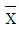
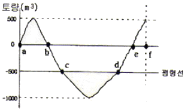
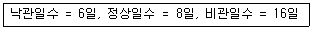
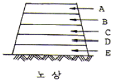
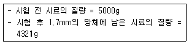
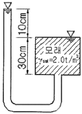
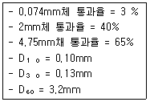
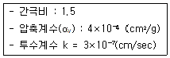
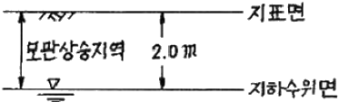

건설재료시험기사 (2010-05-09 기출문제)
1과목: 콘크리트공학
1. 다음 중 한중 콘크리트에 적절하지 않은 양생 방법은?
- 증기 양생
- 전열 양생
- 기건 양생
- 막 양생
(정답률: 66%)

2. 콘크리트 제작시 재료의 계량에 대한 설명으로 틀린 것은?
- 각 재료는 1배치씩 질량으로 계량하여야 한다.
- 계량허용오차는 물과 혼화제가 각각 ±2% 이하이다.
- 연속믹서를 사용할 경우, 각 재료는 용적으로 계량해도 좋다.
- 시멘트의 계량허용오차는 ±1% 이다.
(정답률: 89%)
3. 굳지 않은 콘크리트 중의 전 염소이온량은 몇 kg/m3이하를 원칙으로 하는가?
- 0.10 kg/m3
- 0.20 kg/m3
- 0.30 kg/m3
- 0.40 kg/m3
(정답률: 82%)
4. 콘크리트의 배합강도 결정에 대한 다음 설명 중 옳은 것은? (단, fcr:배합강도, fck: 설계기준강도, s:표준편차)(오류 신고가 접수된 문제입니다. 반드시 정답과 해설을 확인하시기 바랍니다.)
- fck≤35MPa인 경우 fcr=fck+1.34s 또는 fcr=(fck-3.5)+2.33s 중 큰 값으로 정하여야 한다.
- 압축강도의 시험 기록이 없고 fck가 21MPa 미만인 경우 fcr=fck+8.5 이다.
- 압축강도의 시험횟수가 15회인 경우 표준편차의 보정계수는 1.08을 사용한다.
- fck＞35MPa 인 경우 fcr=fck+1.34s 또는 fcr=0.9fck+3.5s 중 큰 값으로 정하여야 한다.
(정답률: 55%)
5. 포장용 시멘트 콘크리트의 배합기준으로 틀린 것은? (단, 콘크리트표준시방서 규정에 따름)
- 설계기준 횡강도(f28)는 4.5Mpa 이상이어야 한다.
- 단위 수량은 150kg/m3 이하이어야 한다.
- 슬럼프 80mm 이하이어야 한다.
- 공기연행 콘크리트의 공기량 범위는 4~6% 이어야 한다.
(정답률: 48%)
6. 콘크리트 배합설계 시 굵은 골재 최대치수의 선정방법 중 틀린 것은?
- 단면이 큰 구조물인 경우 40mm를 표준으로 한다.
- 일반적인 구조물의 경우 20mm 또는 25mm를 표준으로 한다.
- 거푸집 양 측면 사이의 최소 거리의 1/3을 초과해서는 안된다.
- 개별철근, 다발철근, 긴장재 또는 더트 사이 최소 순간격의 3/4을 초과해서는 안된다.
(정답률: 80%)
7. 물-시멘트비가 40%이고 단위시멘트량 400kg/m3, 시멘트의 비중 3.1, 공기량 3%인 콘크리트의 단위골재량의 절대부피는?
- 0.48m3
- 0.54m3
- 0.69m3
- 0.72m3
(정답률: 67%)
8. 수중콘크리트의 비비기에 대한 설명으로 틀린 것은?
- 수중불분리성 콘크리트의 비비기는 제조설비가 갖추어진 배치플랜트에서 물을 투입하기 전 건식으로 20~30초를 비빈 후 전 재료를 투입하여 비비기를 하여야 한다.
- 강제식 믹서를 사용하는 경우 콘크리트가 드럼 내부에 부착되어 충분히 비벼지지 못할 경우가 있기 때문에 믹서는 가경식 믹서를 사용하여야 한다.
- 비비는 시간은 시험에 의해 콘크리트 소요의 품질을 인하여 정하여야 한다.
- 수중불분리성 콘크리트는 믹서에 걸리는 부하가 크기 때문에 소요 품질의 콘크리트를 얻기 위하여 1회 비비기량은 믹서의 공칭용량의 80% 이하로 하여야 한다.
(정답률: 67%)
9. 페놀프탈레인 1% 알콜용액을 구조체 콘크리트 또는 코어공시체에 분무하여 측정할 수 있는 것은?
- 균열폭과 깊이
- 철근의 부식정도
- 콘크리트의 투수성
- 콘크리트의 중성화깊이
(정답률: 91%)
10. 일반콘크리트의 비비기에서 강제식 믹서일 경우 믹서안에 재료를 투입한 후 비비는 시간의 표준은?
- 30초 이상
- 1분 이상
- 1분 30초 이상
- 2분 이상
(정답률: 82%)
11. 다음 중 프리스트레스트 이상의 프리스트레스 감소의 원인이 아닌 것은?
- 강재의 릴렉세이션
- 콘크리트의 건조수축
- 콘크리트의 크리프
- 쉬이스관의 크기
(정답률: 81%)
12. 프리스트레스트 콘크리트에 대한 설명으로 틀린 것은?
- 굵은골재 최대치수는 보통의 경우 25mm를 표준으로 한다.
- 팽창성 그라우트의 재령 28일 압축강도는 최소 25MPa이상이어야 한다.
- 프리텐션 방식에서는 프리스트레싱 할 때 콘크리트 압축강도가 30MPa 이상이어야 한다.
- 팽창성 그라우트의 팽창률은 0~10%를 표준으로 한다.
(정답률: 71%)
13. 급속 동결융해에 대한 콘크리트의 저항시험방법에서 동결 융해 1사이클의 소요시간으로 옳은 것은?
- 1시간 이상, 2시간 이하로 한다.
- 2시간 이상, 4시간 이하로 한다.
- 4시간 이상, 5시간 이하로 한다.
- 5시간 이상, 7시간 이하로 한다.
(정답률: 78%)
14. 매스콘크리트의 온도균열 발생에 대한 검토는 온도균열지수에 의해 평가하는 것을 원칙으로 한다. 철근이 배치된 일반적인 구조물의 표준적인 온도균열지수의 값 중 균열발생을 제한할 경우의 값으로 옳은 것은?
- 1.5 이상
- 1.2~1.5
- 0.7~1.2
- 0.7이하
(정답률: 64%)
15. 콘크리트 압축강도시험에서 공시체에 하중을 가하는 속도로 옳은 것은?
- 압축 응력도의 증가율이 매초 (6±0.4)MPa이 되도록 한다.
- 가장자리 응력도의 증가율이 매초 (0.6±0.04)MPa이 되도록 한다.
- 압축응력도의 증가율이 매초 (0.06±0.04)MPa이 되도록 한다.
- 압축 응력도의 증가율이 매초 (0.6±0.4)MPa이 되도록 한다.
(정답률: 58%)
16. 숏크리트의 특징에 대한 설명으로 틀린 것은?
- 임의 방향으로 시공 가능하나 리바운드 등의 재료손실이 많다.
- 용수가 있는 곳에서도 시공하기 쉽다.
- 노즐맨의 기술에 의하여 품질, 시공성 등에 변동이 생긴다.
- 수밀성이 적고 작업시에 분진이 생긴다.
(정답률: 90%)
17. 알칼리골재반응이 발생하기 위해 필요한 조건으로 거리가 먼 것은?
- 반응성 골재
- 수분
- 부재의 충분한 두께
- 시멘트 및 그 밖의 재료에서 공급되는 알칼리
(정답률: 83%)
18. 콘크리트 다지기에 대한 설명으로 잘못된 것은?
- 내부진동기는 연직방향으로 일정한 간격으로 찔러 넣는다.
- 내부진동기는 콘크리트를 횡방향으로 이동시킬 목적으로 사용해서는 안된다.
- 콘크리트를 타설한 직후에는 절대 거푸집의 외측에 충격을 주어서는 안된다.
- 내부진동기를 하층의 콘크리트 속으로 0.1m정도 찔러 넣는다.
(정답률: 85%)
19. 관리도에 의해 공정관리를 할 때 안정상태라고 볼 수 없는 경우는?
- 연속 35점 중 1점이 관리한계선을 벗어났을 때
- 관리한계선 내의 연속 3점이 연속적으로 상승하였을 때
- 점들의 나열된 방향이 이상이 없을 때
- 점이 관리한계선 내에 있으나 점들이 한계선에 접하여 자주 나타날 때
(정답률: 41%)
20. 콘크리트의 건조수축을 크게 하는 요인이 아닌 것은?
- 흡수량이 적은 골재 사용
- 높은 온도
- 낮은 습도
- 작은 단면치수
(정답률: 50%)
2과목: 건설시공 및 관리
21. 터널보강공법 중 본바닥은 이완되지 않게 지지하고 크랙(crack)의 발달을 방지함과 동시에 암반표면의 풍화를 방지하는 공법은?
- Rock bolt 공법
- Shotcrete 공법
- 강아지 동바리 공법
- grouting 공법
(정답률: 48%)
22. Rock fill Dam과 같이 댐 정상부를 월류시킬 수 없을 때 설치하며, 이 여수로의 월류부는 난류를 막기 위하여 굳은 암반살에 일식선으로 설치하고 월류수맥의 난잡이나 공기연행을 일으키기 쉬우므로 바닥바름을 잘해야 하는 여수로는?
- 사이펀 여수로
- 그로울리홀 여수로
- 측수로 여수로
- 슈트식 여수로
(정답률: 31%)
23.

- R 관리도의 설명으로 잘못된 것은? n개 시료의 평균값이다.
n개 시료의 평균값이다.- R은 측정값의 최대값과 최소값의 차이이다.
- 관리선에는 상부관리한계, 중심선, 하부관리한계가 있다.
- 한 제품 가운데 결점수가 몇 개 있는지의 특성을 문제로 하는 관리도이다.
(정답률: 70%)
24. 지하철을 개착공법으로 시공할 경우 관계없는 공법은?
- 연속 도류벽 공법
- H형강 말뚝공법
- 역권법
- 강널막뚝공법
(정답률: 77%)
25. 공상현상에 대한 대책으로 올바르지 않은 것은?
- 말뚝은 수직으로 굴착하고 철근도 수직으로 세운다.
- slime을 제거하지 말고 그대로 둔다.
- 철근망을 달아매는 기계를 사용하여 세우는 도중의 비틀림, 좌굴을 방지한다.
- Concrete를 Chute내에서 절대로 흘리지 않게 한다.
(정답률: 59%)
26. 그림의 토적곡선에서 c-d구간내의 절토토량 운반시 15t 덤프트럭 3대로 시간당 각각 2회씩 운반할 때 퐁 운반소요시간은 약 몇 시간인가? (단, 덤프효율=1.0, γt=1.8t/m3, L=1.0이다.)

- 5시간
- 8시간
- 10시간
- 13시간
(정답률: 50%)
27. 함수비가 큰 점토질 흙의 다짐에 가장 적합한 기계는?
- 로드 롤러
- 진동 롤러
- 탬핑 롤러
- 타이어 롤러
(정답률: 80%)
28. 다음 건설기계 중 준설과 매립을 동시에 할 수 있는 준설선은?
- Dipper dredger
- Buckt dredger
- Grad bucket dredger
- Pump dredger
(정답률: 50%)
29. 교량가설 공법은 비계를 사용하는 공법과 비계를 사용하지 않는 공법, 비계를 병용하는 공법으로 분류할 수 있는데, 다음 중 비계를 사용하는 공법에 해당하는 것은?
- 크레인 가설공법
- 캔딜레버식 가설공법
- 이동벤트식 가설공법
- 이랙션 트러스식 가설공법
(정답률: 50%)
30. 거푸집 및 동바리를 떼어내는 시기는 많은 요인에 따라 다르므로 떼어내는 시기를 잘못 잡음으로 큰 재해를 일으키는 경우가 많다. 철근 콘크리트에서 거푸집을 떼어내도 좋은 시기를 압축강도의 값으로 할 경우 기둥, 벽, 보의 측면인 경우 최소 얼마의 값이면 떼어내도 좋은가?
- 2 MPa
- 3.5Mpa
- 5.0MPa
- 8.0MPa
(정답률: 65%)
31. 콘크리트 다지기 시공에서 내부진동기를 사용하는 경우 삽입간격을 일반적으로 얼마 이하로 하는 것이 좋은가?
- 2m
- 1.5m
- 1m
- 0.5m
(정답률: 74%)
32. 습윤상태가 곳에 따라 여러 가지로 변화하고 있는 배수지구에서는 습윤상태에 알맞은 암거배수의 양식을 취한다. 이와 같이 1지구내에 소규모의 여러 가지 양식의 암거배수를 많이 설치한 암거의 배열 방식은?
- 차단식
- 자연식
- 집단식
- 빗식
(정답률: 53%)
33. 아스팔트 초장의 시공에 앞서 실시하는 시험포장의 결과로 얻어지는 사항과 관계가 없는 것은?
- 혼합물 현장배합 입도 및 아스팔트 함량의 결정
- 플랜트에서의 작업표준 및 관리목표의 설정
- 시공관리 목표의 설정
- 포장두께의 결정
(정답률: 58%)
34. 아래 표와 같은 조건에사 3점 견적법에 따른 기대공사일수를 구하면?

- 8일
- 9일
- 10일
- 12일
(정답률: 79%)
35. 다음은 아스팔트 포장의 단면도이다. 상단부터(A~E)차례로 옳게 기술한 것은?

- 차단층, 중간층, 표층, 기층, 보조기층
- 표층, 기층, 중간층, 보조기층, 차단층
- 표층, 중간층, 차단층, 기층, 보조기층
- 표층, 중간층, 기층, 보조기층, 차단층
(정답률: 64%)
36. 교량가설의 선정위치로 적절하지 않은 곳은?
- 하천과 양안의 지질이 양호한 곳
- 하폭이 넓을 때에는 굴곡부인 곳
- 교각의 축 방향이 유수의 방향과 평행하게 되는 곳
- 하천과 유수가 안정한 곳
(정답률: 89%)
37. 기초의 굴착에 있어서 주변부를 굴착축조하고 그 후 남아 있는 중앙부를 굴착하는 방법은?
- trench cut 공법
- island 공법
- open cut 공법
- top down 공법
(정답률: 50%)
38. 0.6m3의 백호(back hoe) 한 대를 사용하여 20,000m3의 기초 굴착을 할 때 굴착일수는? (단, 백호의 사이클 타임 : 26sec, 디퍼 계수 : 1.0, f : 0.8, E : 0.6, 1일 운전시간 8시간)
- 63일
- 68일
- 72일
- 80일
(정답률: 74%)
39. 지하층을 구축하면서 동시에 지상층도 시공이 가능한 역타공법(Top-down공법)이 현장에서 많이 사용된다. 역타공법의 특징으로 틀린 것은?
- 인접건물이나 인접지대에 영향을 주지않는 지하굴착 공법이다.
- 대지의 활용도를 극대화할 수 있으므로 도심지에서 유리한 공법이다.
- 지하층 슬래브와 지하벽체 및 기초 말뚝기둥과의 연결 작업이 쉽다.
- 지하주벽을 먼저 시공하므로 지하수차단이 쉽다.
(정답률: 75%)
40. 다음은 PERT/CPM 공정관리 기법의 공기 단축 요령에 관한 설명이다. 옳지 않은 것은?
- 최소 비용 기울기를 갖는 공정부터 공기를 단축한다.
- 크리티칼 태스 선상의 공정을 우선 단축한다.
- 전체의 모든 활동이 주공정선(C.P)화 되면 공기 단축은 절대 불가능하다.
- 공기 단축에 주공정선(C.P)이 복수화 된다.
(정답률: 73%)
3과목: 건설재료 및 시험
41. 목재에 관한 다음 설명 중 옳지 않은 것은?
- 제재후의 심재는 변재보다 썩기 쉽다.
- 벌목시기는 가을에서 겨울에 걸친 기간이 가장 적당하다.
- 목재는 세포막 중에 스며든 결합수가 감소하면 수축변형한다.
- 목재의 강도는 절대 건조일 때 최대가 된다.
(정답률: 73%)
42. 시멘트 응결 및 경화에 영향을 미치는 요소에 대한 설명으로 틀린 것은?
- 풍화되면 응결 및 경화가 빨라진다.
- 온도가 높으면 응결 및 경화가 빠르다.
- 배합 수량이 많으면 응결 및 경화가 늦어진다.
- 석고를 첨가하면 응결 및 경화가 늦어진다.
(정답률: 50%)
43. 시멘트에 관한 다음 설명 중 틀린 것은?
- 시멘트 경화체의 pH가 높은 것은 수화반응시 생성되는 수산화칼슘이 가장 큰 원인이다.
- C3A가 많은 포틀랜드시멘트는 화학저항성이 작다.
- 시멘트 중에 퐣ㅁ되어 있는 Mg0는 시멘트의 이상팽창의 원인이 된다.
- 조강포틀랜드시멘트의 비중은 중용열포틀랜드시멘트의 비중보다 항상 크다.
(정답률: 53%)
44. 다음 중 시멘트의 성질과 그 성질을 측정하는 시험기의 연결이 잘못된 것은?
- 안정성-온토클레이브
- 비중-르샤틀리에병
- 응결-비카트침
- 유동성-길모아침
(정답률: 65%)
45. 아스팔트의 비중 측정시의 표준온도는?
- 15℃
- 20℃
- 25℃
- 30℃
(정답률: 56%)
46. 길이가 15cm인 어떤 금속을 17cm로 인장시켰을 때 폭이 6cm에서 5.8cm가 되었다. 이 금속의 포아송 비는?
- 0.15
- 0.2
- 0.25
- 0.30
(정답률: 40%)
47. 로스앤젤레스 시험기에 의한 굵은 골재의 마모 시험결과가 아래표와 같을 때 마모감량은 얼마인가?

- 6.4%
- 7.4%
- 13.6%
- 15.7%
(정답률: 48%)
48. 암석 전체의 체적에 대한 공극의 비율을 공극률(porosity)이라고 한다. 다음 암석 중 일반적으로 공극률이 가장 큰 것은?
- 화강암
- 사암
- 응회암
- 대리석
(정답률: 60%)
49. 다음 중 골재의 조립률을 구하는데 사용되는 표준체의 크기가 아닌 것은?
- 40mm
- 10mm
- 1.5mm
- 0.3mm
(정답률: 67%)
50. 콘크리트용 혼화재로서 플라이애시를 사용할 경우의 효과로 잘못된 것은?
- 콘크리트의 장기강도가 커진다.
- 시멘트 페이스트의 유동성을 개선시켜 워커빌리티를 향상시킨다.
- 콘크리트의 초기온도상승 억제에 유용하여 매스콘크리트 공사에 많이 이용된다.
- 플라이애시를 사용할 경우 해수에 대한 내화학성이 약해지므로 해양공사에는 적합하지 않다.
(정답률: 67%)
51. 다음 중 목재의 인공건조법이 아닌 것은?
- 수침법
- 끊임법
- 열기법
- 증기법
(정답률: 78%)
52. 폭파력이 강하고 수중에서도 폭발할 수 있는 폭약은 다음 중 어느 것인가?
- 스트레이트 다이너마이트
- 교질 다이너마이트
- 분상 다이너마이트
- 규조토 다이너마이트
(정답률: 61%)
53. 아스팔트의 물리적 성질에 대한 설명으로 틀린 것은?
- 아스팔트의 비중은 일반적으로 약 1.0~1.1정도이다.
- 아스팔트의 침입도는 온도 상승에 따라 감소한다.
- 아스팔트의 인화점은 대체로 250~320℃의 범위에 있다.
- 아스팔트의 열팽창계수는 상온 200℃까지의 범위에서 대개 (6.0~6.2)×10-4/℃정도이다.
(정답률: 60%)
54. 토목에서 구조재료용으로 사용되는 플라스틱의 장점에 대한 설명으로 틀린 것은?
- 플라스틱의 적은 중량으로 인해 구조물의 경량화가 가능하다.
- 플라스틱은 탄성계수가 크고 변형이 작다.
- 공장에서 대량생산이 가능하다.
- 내수성 및 내습성이 양호하다.
(정답률: 85%)
55. 커트백(Cut back) 아스팔트에 대한 설명으로 틀린 것은?
- 대부분의 도로포장에 사용된다.
- 경화 속도 순서로 나누면 RC＞MC＞SC의 순이다.
- 커트백 아스팔트를 사용할 때는 가열하여 사용하여야 한다.
- 침입도 60~120 정도의 연한 스트레이트 아스팔트에 용제를 가해 유동성을 좋게 한 것이다.
(정답률: 66%)
56. 화약류를 사용할 경우 취급상의 주의할 점 중에서 잘못된 것은?
- 뇌관과 폭약은 동일한 장소에 보관하여 사용시 편의를 도모해야 한다.
- 직사광선과 화기가 있는 곳은 피해야 한다.
- 운반 중 충격이 가지 않도록 운반상에 주의를 기울여야 한다.
- 장기보존시 동결, 온도, 흡습에 대하여 시심한 주의를 기울여야 한다.
(정답률: 80%)
57. 광물질 혼화재 중의 실리카가 시멘트 수화생성물인 수산화칼슘과 반응하여 장기강도증진효과를 발휘하는 현상을 무엇이라 하는가?
- 포졸란반응(pozzolan reaction)
- 수화반응(hydration)
- 블 베아링(ball bearing) 작용
- 충전(micro filler)효과
(정답률: 60%)
58. 콘크리트용 굵은 골재의 내구성을 판단하기 위해서 황산나트륨에 의한 안정성 시험을 할 경우 조작을 5번 반복했을 때 굵은 골재의 손실질량 백분율의 한도는 일반적으로 얼마인가?
- 12%
- 10%
- 8%
- 5%
(정답률: 53%)
59. 포틀랜드시멘트의 클링커에 대한 설명 중 틀린 것은?
- 클링커는 단일조성의 물질이 아니라 C3S, C2S, C3A, C4AF의 4가지 주요화합물로 구성되어 있다.
- 클링커의 화합물 중 C3S 및 C2S는 시멘트 강도의 대부분을 지배한다.
- C3A는 수화속도가 대단히 빠르고 발열량이 크며 수축도 크다.
- 클링커의 화합물 중 C3S가 많고 C2S가 적으면 시멘트의 강도 발현이 늦어지지만 장기재령은 향상된다.
(정답률: 62%)
60. 콘크리트용 혼화재료로 사용되는 고로슬래그 미분말에 대한 설명으로 틀린 것은?
- 고로슬래그 미분말을 사용한 콘크리트는 보통콘크리트보다 콘크리트 내부의 세공경이 작아져 수밀성이 향상된다.
- 고로슬래그 미분말은 플라이애시나 실리카흄에 비해 포틀랜드시멘트와의 비중차가 우수하다.
- 고로슬래그 미분말은 혼화재로 사용한 콘크리트는 염화물이온 침투를 억제하여 철근부식 억제효과가 있다.
- 고로슬래그 미분말의 혼합률을 시멘트 중량에 대하여 70% 정도 혼합한 경우 중성화 속도가 보통콘크리트의 1/2정도로 감소된다.
(정답률: 50%)
4과목: 토질 및 기초
61. 그림과 같은 조건에서 분사현상에 대한 안전율을 구하면? (단, 모래의 γsat=2.0t/m3이다.)

- 1.0
- 2.0
- 2.5
- 3.0
(정답률: 39%)
62. 전단마찰각이 25°인 점토의 현장에 작용하는 수직응력이 5t/m2이다. 과거 작용했던 최대 하중이 10t/m2이라고 할 때 대상지반의 정지토압계수를 추정하면?
- 0.40
- 0.57
- 0.82
- 1.14
(정답률: 27%)
63. 흙속에서의 물의 흐름에 대한 설명으로 틀린 것은?
- 흙의 간극은 서로 연결되어 있어 간극을 통해 물이 흐를 수 있다.
- 특히 사질토의 경우에는 실험실에서 현장 흙의 상태를 재현하기 곤란하기 때문에 혅장에서 투수시험을 실시하여 투수계수를 결정하는 것이 좋다.
- 점토가 이산구조로 퇴적되었다면 면모구조인 경우보다 더 큰 투수계수를 갖는 것이 보통이다.
- 흙이 포화되지 않았다면 포화된 경우보다 투수계수는 낮게 측정된다.
(정답률: 53%)
64. 현장 흙의 들밀도시험 결과 흙을 파낸 부분의 체적과 파낸 흙의 무게는 각각 1800m3, 3.95hk이었다. 함수비는 11.2%이고, 흙의 비중 2.65이다. 최대건조 단위중량이 2.⑤g/cm3일 때 상대다짐도는?
- 95.1%
- 96.1%
- 97.1%
- 98.1%
(정답률: 32%)
65. 입도분석 시험결과가 아래 표와 같다. 이 흙을 통일분류법에 의해 분류하면?

- GW
- GP
- SW
- SP
(정답률: 48%)
66. 평판 재하 실험에서 재하판의 크기에 의한 영향(scale effect)에 관한 설명으로 틀린 것은?
- 사질토 지반의 지지력은 재하판의 폭에 비례한다.
- 점토지반의 지지력은 재하판의 폭에 무관하다.
- 사질토 지반의 침하량은 재하판의 폭이 커지면 약간 커지기는 하지만 비례하는 정도는 아니다.
- 점토지반의 침하량은 재하판의 폭에 무관하다.
(정답률: 53%)
67. 다짐되지 않은 누께 2m, 상대밀도 45%의 느슨한 사질토 지반이 있다. 실내시험결과 최대 및 최소 간극비가 0.85, 0.40으로 각각 산출되어었다. 이 사질토를 상대 밀도 70%까지 다짐할 때 두께의 감소는 약 얼마나 되겠는가?
- 13.3cm
- 17.2cm
- 21.0cm
- 25.5cm
(정답률: 32%)
68. 모래지층사이에 두께 6m의 점토층이 있다. 이 점토의 토질 실험결과가 아래 표와 같을 때, 이 점토층의 90%압밀을 요하는 시간은 약 얼마인가? (단, 1년은 365일로 계산)

- 12.9년
- 5.22년
- 1.29년
- 52.2년
(정답률: 35%)
69. 내부마찰각이 30°, 단위중량이 1.8t/m3인 흙의 인장균열 깊이가 3m일 때 점착력은?
- 1.56t/m2
- 1.67t/m2
- 1.75t/m2
- 1.81t/m2
(정답률: 54%)
70. 토질조사에 대한 설명 중 옳지 않은 것은?
- 사운딩(Sounding)이란 지중에 저항체를 삽입하여 토층의 성상을 파악하는 현장 시험이다.
- 불교란 시료를 얻기 위해서 Foil Sampler, Thin wall tube sampler 등이 사용된다.
- 표준관입시험은 로드(Rod)의 길이가 길어질수록 N치가 작게 나온다.
- 베인 시험은 정적인 사운딩이다.
(정답률: 30%)
71. 흙속에 있는 한 점의 최대 및 최소 주응력이 각각 2.0kg/cm2 및 1.0kg/cm2일 때 최대 주응력면과 30°를 이루는 평면상의 전단응력을 구한 값은?
- 0.1⑤kg/cm2
- 0.215kg/cm2
- 0.323kg/cm2
- 0.433kg/cm2
(정답률: 28%)
72. 크기가 1.5m×1.5m 인 직접기초가 있다. 근입깊이가 1.0m일 때 기초가 받을 수 있는 최대허용하중을 Terzaghi 방법에 의하여 구하면? (단, 기초지반의 점착력은 1.5t/m2, 단위중량은 1.8t/m3, 마찰각은 20°이고 이 때의 지지력 계수는 Nc=17.69, Nq=7.44, Nr=3.64이며, 허용지지력에 대한 안전율은 4.0으로 한다.)
- 약 29t
- 약 39t
- 약 49t
- 약 59t
(정답률: 44%)
73. 함수비 18%의 흙 500kg을 함수비 24%로 만들려고 한다. 추가해야 하는 물의 양은?
- 80.41kg
- 54.52kg
- 38.92kg
- 25.43kg
(정답률: 42%)
74. Φ=33°인 사질토에 25° 경사의 사면을 조성하려고 한다. 이 비탈면의 지표까지 포화되었을 때 안전율을 계산하면? (단, 사면 흙의 γsat=1.8t/m3)
- 0.62
- 1.41
- 0.70
- 1.12
(정답률: 14%)
75. 아래 그림과 같이 지표ᄁᆞ지가 모관상승지역이라 할 때 지표면 바로 아래에서의 유효응력은? (단, 모관상승 지역의 포화도는 90%이다.)

- 0.9t/m2
- 1.0t/m2
- 1.8t/m2
- 2.0t/m2
(정답률: 32%)
76. 흙의 분류법인 AASHTO분류법과 통일분류법을 비교ㆍ분석한 내용으로 틀린 것은?
- AASHTO분류법은 입도분포, 군지수 등을 주요 분류인자로 한 분류법이다.
- 통일분류법은 입도분포, 액성한계, 소성지수 등을 주요 분류인자로 한 분류법이다.
- 통일분류법은 0.075mm체 통과율을 35%를 기준으로 조립토와 세립토로 분류하는데 이것은 AASHTO분류법 보다 적절하다.
- 통일분류법은 유기질토 분류방법이 있으나 AASHTO분류법은 없다.
(정답률: 30%)
77. 지표가 수평인 곳에 높이 5m의 연직용벽이 있다. 흙의 단위중량이 1.8t/m3, 내부 마찰각이 30°이고 점착력이 없을 때 주동토압을 얼마인가?
- 4.5t/m
- 5.5t/m
- 6.5t/m
- 7.5t/m
(정답률: 29%)
78. Meyerho의 일반 지지력 공식에 포함되는 계수가 아닌 것은?
- 국부전단계수
- 근입깊이계수
- 경사하중계수
- 형상계수
(정답률: 34%)
79. 투수계수가 2×10-5cm/sec, 수위차 15m인 필댐의 단위폭 1cm에 대한 1일 침투 유량은? (단, 등수두선으로 싸인 간격수 = 15, 유선으로 싸인 간격수 = 5)
- 1×10-2cm3/day
- 864cm3/day
- 36cm3/day
- 14.4cm3/day
(정답률: 56%)
80. 실내시험에 의한 점토의 강도 증가율(Cu/P)산정 방법이 아닌 것은?
- 소성지수에 의한 방법
- 비배수 전단강도에 의한 방법
- 압밀비배수 삼축압축시험에 의한 방법
- 직접전단시험에 의한 방법
(정답률: 50%)